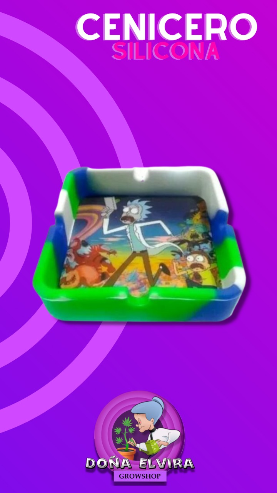
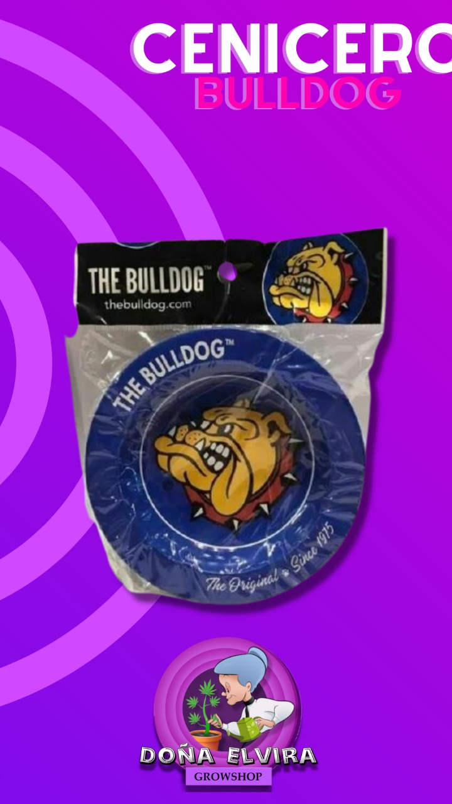
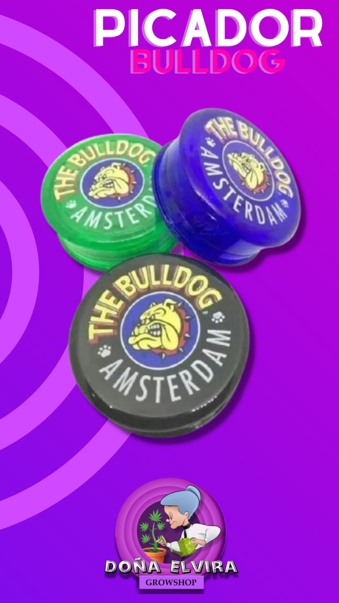

Ceniceros de silicona
Ceniceros de silicona cuadrados y redondos con graficas de muppets y rick&morty
Ceniceros Bull Dog Amsterdam
Ceniceros de la iconica marca Bull Dog Amsterdam de metal en varios colores.


Picadores tres partes
Picadores tres partes entraron varias marcas en distintos colores: Bull dog Amsterdam, Santa Planta y POD